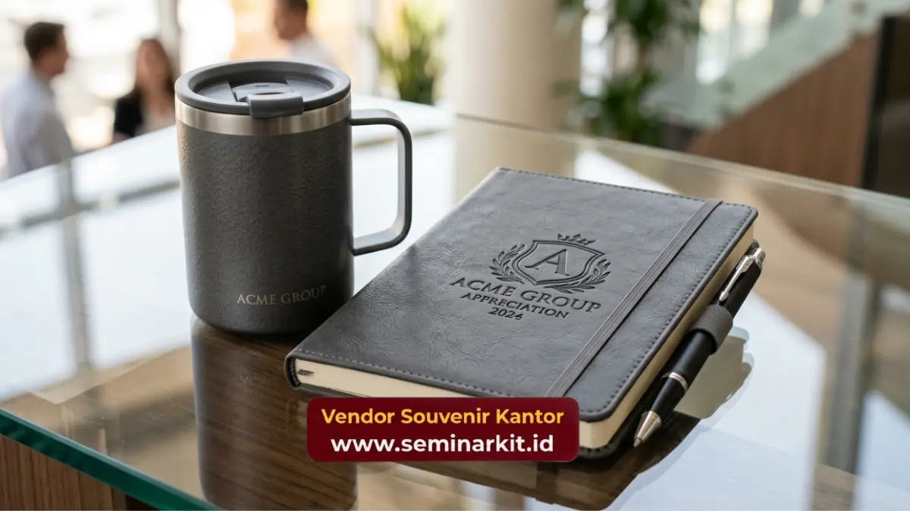

Souvenir employee appreciation adalah hadiah korporat yang diberikan perusahaan untuk mengapresiasi kontribusi, loyalitas, atau pencapaian karyawan secara personal maupun tim.
Souvenir ini biasanya dilengkapi custom logo perusahaan dan dipilih untuk memperkuat rasa dihargai. Vendor Souvenir Kantor menyediakan pilihan souvenir employee appreciation siap kirim untuk kebutuhan perusahaan Anda.
- Souvenir employee appreciation berfungsi sebagai simbol pengakuan atas kerja keras karyawan
- Jenis souvenir bervariasi mulai dari alat tulis premium hingga hampers eksklusif
- Momen pemberian dapat disesuaikan dengan anniversary kerja, pencapaian target, atau hari besar perusahaan
- Kualitas dan personalisasi souvenir memengaruhi persepsi karyawan terhadap perusahaan
- Vendor Souvenir Kantor menyediakan opsi custom logo dengan proses pemesanan yang efisien
Apa Itu Souvenir Employee Appreciation?
Souvenir employee appreciation adalah bentuk merchandise korporat yang dirancang khusus untuk menghargai kinerja, dedikasi, atau momen penting karyawan dalam perusahaan.
Berbeda dengan souvenir umum yang dibagikan saat event, souvenir jenis ini biasanya diberikan secara personal atau kepada kelompok kecil sebagai bentuk penghargaan langsung.
Konsep employee appreciation sendiri berasal dari kesadaran bahwa karyawan yang merasa dihargai cenderung memiliki keterikatan kerja yang lebih tinggi.
Souvenir menjadi salah satu media paling praktis untuk menyampaikan apresiasi tersebut secara konkret, selain komunikasi verbal atau tunjangan finansial.
Di lingkungan korporat Indonesia, tren pemberian souvenir employee appreciation semakin berkembang seiring meningkatnya perhatian perusahaan terhadap kesejahteraan psikologis karyawan, bukan hanya kompensasi materiil semata.
Mengapa Souvenir Employee Appreciation Penting bagi Perusahaan?
Souvenir employee appreciation penting karena membantu perusahaan membangun budaya kerja yang positif dan menurunkan tingkat turnover karyawan secara bertahap.
Pengakuan yang konsisten terhadap kontribusi karyawan dapat memperkuat loyalitas jangka panjang.
Beberapa alasan utama souvenir ini relevan bagi perusahaan meliputi:
- Meningkatkan rasa memiliki karyawan terhadap perusahaan
- Memperkuat citra perusahaan sebagai tempat kerja yang peduli
- Menjadi media komunikasi non-verbal atas pencapaian tertentu
- Mendukung program employee engagement secara berkelanjutan
- Membedakan perusahaan dari kompetitor dalam hal budaya kerja
Perusahaan yang secara rutin menjalankan program apresiasi karyawan, termasuk melalui souvenir, umumnya melaporkan tingkat kepuasan kerja yang lebih stabil dibandingkan perusahaan tanpa program serupa.
Jenis Souvenir Employee Appreciation yang Paling Diminati
Jenis souvenir employee appreciation yang paling diminati perusahaan meliputi alat tulis premium, drinkware custom, hampers makanan, dan produk lifestyle bertema kerja. Pemilihan jenis biasanya disesuaikan dengan anggaran dan profil karyawan penerima.
Alat Tulis dan Produk Kerja Premium
Notebook custom, pulpen premium, hingga desk organizer menjadi pilihan populer karena fungsional dan dapat digunakan sehari-hari di lingkungan kerja. Produk kategori ini cocok untuk apresiasi rutin maupun momen tertentu seperti kenaikan jabatan.
Drinkware dan Produk Lifestyle
Tumbler custom logo, mug premium, atau botol minum berbahan stainless menjadi favorit karena praktis dan sering terlihat digunakan karyawan di lingkungan kerja, sehingga turut memperkuat brand awareness internal perusahaan.

Hampers dan Paket Eksklusif
Hampers berisi kombinasi produk seperti makanan ringan premium, merchandise, dan kartu ucapan personal cocok digunakan untuk momen besar seperti akhir tahun, hari ulang tahun perusahaan, atau pencapaian target tahunan.
Produk Kesehatan dan Wellness
Souvenir bertema wellness seperti aromaterapi mini, alat olahraga ringan, atau paket self-care semakin diminati karena mencerminkan perhatian perusahaan terhadap kesejahteraan karyawan secara menyeluruh, tidak hanya aspek kerja.
Kapan Waktu Tepat Memberikan Souvenir Employee Appreciation?
Waktu tepat memberikan souvenir employee appreciation umumnya bertepatan dengan momen anniversary kerja karyawan, pencapaian target perusahaan, hari besar nasional, atau akhir tahun sebagai bentuk penutup evaluasi kinerja.
Beberapa momen yang sering dijadikan waktu pemberian souvenir antara lain:
- Anniversary kerja karyawan (1 tahun, 5 tahun, dan seterusnya)
- Pencapaian target tim atau individu
- Hari Employee Appreciation Day
- Perayaan akhir tahun perusahaan
- Kelahiran anak, pernikahan, atau momen personal karyawan
Konsistensi waktu pemberian souvenir turut memengaruhi seberapa besar dampak apresiasi tersebut dirasakan karyawan, sehingga perusahaan disarankan memiliki kalender program apresiasi yang jelas.
Faktor Penting dalam Memilih Souvenir Employee Appreciation
Faktor penting dalam memilih souvenir employee appreciation meliputi kualitas material, relevansi dengan kebutuhan karyawan, kemudahan personalisasi logo, serta ketepatan waktu pengiriman dari vendor.
Kualitas dan Daya Tahan Produk
Souvenir yang berkualitas rendah dapat menimbulkan kesan sebaliknya dari tujuan apresiasi itu sendiri. Material yang tahan lama dan finishing rapi menjadi standar minimal agar souvenir benar-benar dirasakan nilainya oleh karyawan.
Relevansi dengan Kebutuhan Karyawan
Souvenir yang relevan dengan aktivitas sehari-hari karyawan, baik di kantor maupun di rumah, cenderung lebih dihargai dibandingkan produk yang bersifat umum dan kurang personal.
Kemudahan Custom Logo dan Branding
Personalisasi logo perusahaan pada souvenir memperkuat identitas dan membuat penerima merasa souvenir tersebut dirancang khusus, bukan produk massal generik.
Kesalahan Umum dalam Pemberian Souvenir Employee Appreciation
Kesalahan umum dalam pemberian souvenir employee appreciation antara lain memilih produk generik tanpa personalisasi, mengabaikan preferensi karyawan, serta memberikan souvenir tanpa momentum yang jelas sehingga maknanya kurang terasa.
Beberapa kesalahan yang perlu dihindari perusahaan:
- Memilih souvenir hanya berdasarkan harga termurah tanpa mempertimbangkan kualitas
- Tidak menyesuaikan jenis souvenir dengan demografi karyawan
- Memberikan souvenir tanpa pesan atau konteks apresiasi yang jelas
- Terlambat dalam proses pemesanan sehingga kualitas custom terburu-buru
Menghindari kesalahan-kesalahan ini membantu perusahaan memaksimalkan dampak positif dari program apresiasi karyawan yang dijalankan.
Tips Memastikan Souvenir Employee Appreciation Berkesan
Souvenir employee appreciation akan lebih berkesan jika dikombinasikan dengan pesan personal, kemasan premium, dan momentum pemberian yang tepat sehingga karyawan merasakan apresiasi secara utuh, bukan sekadar formalitas.
Perusahaan dapat mempertimbangkan langkah berikut untuk memaksimalkan dampak souvenir:
- Menyertakan kartu ucapan personal pada setiap souvenir
- Memilih kemasan yang rapi dan mencerminkan citra profesional perusahaan
- Melibatkan atasan langsung dalam momen penyerahan souvenir
- Menyesuaikan jenis souvenir dengan pencapaian spesifik karyawan
Vendor Souvenir Kantor membantu perusahaan mewujudkan detail-detail tersebut melalui layanan custom logo dan pilihan kemasan premium yang dapat disesuaikan dengan kebutuhan program apresiasi Anda.
Souvenir employee appreciation merupakan investasi strategis bagi perusahaan untuk membangun budaya kerja yang positif dan meningkatkan loyalitas karyawan.
Pemilihan jenis souvenir yang tepat, personalisasi logo, serta momentum pemberian yang jelas menjadi kunci keberhasilan program apresiasi ini.
Untuk kebutuhan souvenir employee appreciation dengan kualitas premium dan proses pemesanan yang mudah, kunjungi vendorsouvenirkantor.web.id dan konsultasikan kebutuhan perusahaan Anda sekarang.

Banner promosi: klik gambar untuk langsung terhubung ke WhatsApp tim sales.